Finding, Selecting, and Ordering Records
Alpha Five provides a variety of tools for finding, selecting, and ordering records, that let you easily perform powerful and complex searches, and group records into lists that match your specified criteria.
In this lesson, you learn how to find, select, and order records, and how to use indexes and queries.
The following table describes some of the key terms and concepts in record selecting and ordering.
|
Term |
Description |
|
Ordering |
Arranging records according to the values in their fields, in a sequence that you specify. Ordering is also referred to as sorting. |
|
Order Criteria |
Parameters you specify to sort records. |
|
Selecting |
Choosing particular records with fields that match criteria that you specify, and excluding the records that do not match (filtering out). Selecting is also referred to as filtering. |
|
Selection Criteria |
Parameters you specify for selecting records. |
|
Filter Expression |
An expression used to specify record matching criteria. You can enter filter expressions manually or create them using the Filter Builder, Query Genie, or Expression Builder. |
|
Key |
A value by which a record can be identified. |
When you add records to a table, they are stored in the order in which you entered them, and are assigned a unique, sequential record number. When you first open a table browse or form, the default order of the records is the record number order.
You can change the order in which the records appear, but not the order in which they are stored. Queries, filters, and sorting are three ways to specify changes in the display order. You can save and reuse display order changes. Refer to the Sorting and Selecting Overview.
You often use ordering and filtering together, resulting in an ordered list of selected records, that you can use in a report, promotional mailing, monthly billing, or other project. When you view, print, or process records, Alpha Five uses this ordered list of selected records, called a record list.
When you open a form or browse, the record display is the most recently used record list, if you have not set the form or browse filter or order properties.
Filtering involves matching record field data to a specified criteria, and creating a list of the matching records.
You can restrict your view of table data by filtering out some records. This process does not change the data stored in the table. Records that are filtered out are just temporarily hidden from view.
You can filter records without ordering them. This produces an unordered list of the records in the table that match the filter criteria you specify.
Alpha Five uses indexes to determine the order in which records appear in a table, and to quickly find records. An index is a table that contains keys representing every record in the table. The keys are stored in order. By looking up a key in the index, Alpha Five can quickly find the corresponding record in the table. Refer to the Overview of Indexes and Queries.
Typically, when you enter records in a table, you do not enter them in any particular order. For example, the records in an imaginary Sales_Rep table are in a random order.
Sales_Rep Table
|
Record Number |
Name |
City |
State |
|
0003 |
King |
Boston |
MA |
|
0002 |
Cohen |
Atlanta |
GA |
|
0005 |
Smith |
Los Angeles |
CA |
|
0004 |
Abbott |
Jacksonville |
FL |
|
0001 |
Thomas |
Chicago |
IL |
If the table is indexed on the Name field, Alpha Five creates a separate index in which the entries are ordered alphabetically, by name. A table can have several different indexes, each on different fields. All of the indexes are physically stored in a single CDX file.
Name Index
|
Key |
Points to Record Number |
|
Abbott |
0004 |
|
Cohen |
0002 |
|
King |
0003 |
|
Smith |
0005 |
|
Thomas |
0001 |
In the Name index, the entries are sorted by name; each entry points to the corresponding record in the table. You can think of the index as a separate, sorted table with just two fields: Key and Record Number.
When Name is the current index, the table records appear sorted by name, though they are not physically in this order in the table.
When you add a new record, Alpha Five adds it at the end of the table. The record's key is also added to the index, but in the index, it is added in the correct (sorted) location. For example, if you add Mr. Black from San Diego, the Sales_Rep table and the Name index appear as follows.
Sales_Rep Table
|
Record Number |
Name |
City |
State |
|
0003 |
King |
Boston |
MA |
|
0002 |
Cohen |
Atlanta |
GA |
|
0005 |
Smith |
Los Angeles |
CA |
|
0004 |
Abbott |
Jacksonville |
FL |
|
0001 |
Thomas |
Chicago |
IL |
|
0006 |
Black |
San Diego |
CA |
Name Index
|
Key |
Points to Record Number |
|
Abbott |
0004 |
|
Black |
0006 |
|
Cohen |
0002 |
|
King |
0003 |
|
Smith |
0005 |
|
Thomas |
0001 |
Because Alpha Five maintains the index in sorted order, the Name index always appears ordered by name. Alpha Five updates the index any time you add or change a record.
Using Keys and Key Expressions
The entries in the index are called keys. A key can be a single field, as shown in the previous example, or you can create the key from several fields.
For example, to see the Sales_Rep table, ordered by State, and within State, ordered by City, you create an index on State+City. In this example, the key is constructed by concatenating the State and City fields.
Index
|
Key |
Points to Record Number |
|
CALos Angeles |
0005 |
|
CASan Diego |
0006 |
|
FLJacksonville |
0004 |
|
GAAtlanta |
0002 |
|
ILChicago |
0001 |
|
MABoston |
0003 |
The State+City index is called a multi-level index. You can use the <span class=Screen>Index Builder</span> to create a key expression with multiple fields.
Keys and key expressions are the basis for indexes and queries.
Using an index, you can quickly locate a particular record in a table. For example, if you do not have a Name index, and you want to find the record for Mr. Black, Alpha Five would have to examine all the records in the table, until it reached the last record, Mr. Black. In a table with very many records, this would take a long time. When you use the index, finding Mr. Black's record is very fast, because the Name index is a much smaller table; it has only two fields, the key and record number. Alpha Five searches the smaller index table much faster. This advantage increases with the size of the main table. Once Black is found in the index, Alpha Five quickly locates the corresponding record in the Sales_Rep table, by using the index record pointer.
By creating an index, you speed up queries and other operations that use the indexed fields. Indexed fields are fields that are commonly used to find data in a table. However, creating indexes on every field is likely to slow down data entry, as Alpha Five updates each index whenever you enter or change a record.
Two ways that Alpha Five creates an ordered list of selected records is by using indexes and queries.
|
Term |
Description |
|
Index |
You define an index by creating a key expression in the Index Builder. Alpha Five builds the index after you define it. Alpha Five maintains and updates the index, adjusting its ordered list of selected records, when you add, change, or delete records. |
|
Query |
You define a query by entering field names and expressions in the Query Genie. You run the query, producing an ordered list of selected records, called a query list. You can save the query definition for reuse. If the record data changes, you must re-run the query to update the query list. |
Query lists and indexes are similar, in that they both contain a sorted list of key values. However, Alpha Five updates indexes when you add or change records; query lists are static, and become out of date when you add and change records. To update a query list, you must refresh the current query, or generate a new query list by re-running the query.
In the following procedures, you learn how to select and order records, and to use queries and indexes.
Alpha Five has many options for finding, selecting, and ordering records. In the following lessons, you use several of them. You can quickly access Alpha Five searching and sorting capabilities using the Form View Toolbar and Browse View Toolbar buttons.
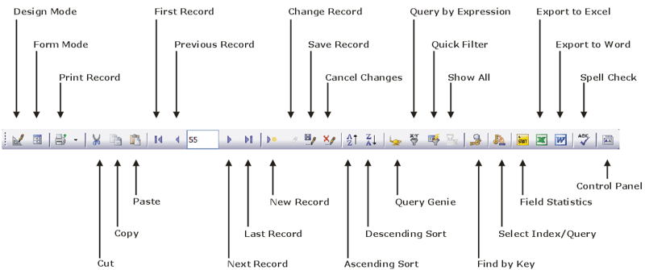
The Find > Find Text... command displays the Locate dialog, which allows you to search sequentially through field data for records containing matching text, numbers, dates, or a series of characters that you specify. The search criteria you specify does not need to match exactly; you can match word fragments. For example, if you search for the word data, Locate returns both data and database.
When finding records, Alpha Five returns the first match in the record list. In the next procedure, you are looking for Mr. Smith's customer record.
To use Find Text:
Double-click the Customer table in the AlphaSports Control Panel, to open the Default Browse.
Select Find > Find Text... from the menu bar, or press CTRL+L. The Locate dialog box appears.

You have the option to search in All Fields or only the Current Field, and whether to search Forwards or Backwards.
Keep the default options: All Fields and Forwards.
Type "smith" in the Search For text box, and click Find. Alpha Five highlights the first record it finds for a customer containing the name "smith", which is "James Smithson".
Click Find again, to locate another customer record with the name, Smith. Alpha Five highlights the record for "Robert Smith".
The Find > Find by Key... command displays the Find by Key dialog, which allows you to search for a record whose key most closely matches the key value you specify. For example, in a table with records ordered by Lastname, you could enter the letter "s", and Alpha Five returns the first record in which the Lastname field begins with an "s". In this example, the key value for which you are searching is "s", and the key is Lastname.
In the next procedure, you use Find by Key to locate Mr. Smith's customer record. In this example, the key value for which you are searching is "Smith"; the key is Lastname.
To use Find by Key :
With the Customer table Default Browse open, select
 , Find > Find by Key..., or press
CTRL+K. The Find by Key
dialog box appears.
, Find > Find by Key..., or press
CTRL+K. The Find by Key
dialog box appears.
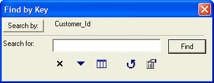
Next to the Search By button, the dialog box shows the current key.
Click the Search By button. The Select Index/Query or Field dialog box appears.
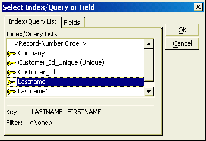
The Index/Query List tab lists the defined indexes and last four queries run. as you select each index, Alpha Five displays its key expression. The expression for the Lastname index is Lastname+Firstname. The expression for the Lastname1 index is Lastname.
Select the Fields tab. The list of fields in the table appears.
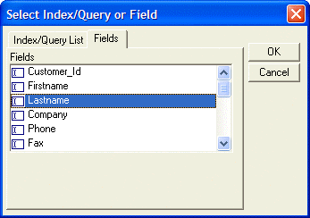
You can select any field and Alpha Five orders the data in that field. This lets you perform a Find by Key, using the selected field as the key.
Select "Lastname" from the list of fields, and click OK. Lastname appears next to the Search By button.
Type the letter "s" in the Search For text box.
Alpha Five fills in the last name, "Smallwood".
Next to the first letter "s", type the letters "m" and "i". Alpha Five fills in the last name "Smith".
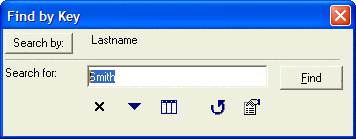
Click Find.
The first record with the last name "Smith" appears at the top of the browse.
Locating records using Find Text uses a method of searching records sequentially, to find records that matches criteria you specify, similar to the Find command present in many word processors. Using Find by Key is much faster than Find Text (when an appropriate index exists), particularly when a table has very many records.
The AlphaSports Customer table Default Browse shows the customer records in record number order. You want to view the records ordered by state, so that the customers in the same state are grouped together. You can order records by their field values using single and multiple sorting techniques.
When you issue a sort command, Alpha Five uses an index, if one exists, or a query, to order the records. The Alpha Five Status Bar, at the bottom of the screen, shows you which one is being used.
To sort customer records:
Open the Default Browse for the AlphaSports Customer table.
Place the cursor in the Bill State/Region field of any record, and click the Ascending Sort button, or select Query > Ascending Sort from menu bar. Alpha Five orders the records alphabetically, using the state field values.
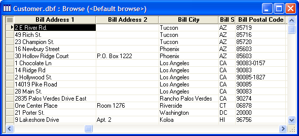
The Status Bar shows that Alpha Five used a query.
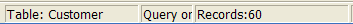
To sort the records on more than one field:
Select Query > Multi-field Sort. The Custom Sort dialog box appears.
Select Sort On: "Bill_state_region", then, sort on: "Bill_city", and click OK.
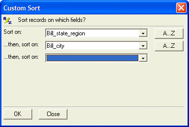
Alpha Five sorts the table data by state first, then by city within each state.
Filtering Records
When you filter records, you block from view the records that do not match the criteria you specify.
Showing All Records (Clearing a Filter)
After applying a filter in a form or browse, clicking the  Show All button on the toolbar
will re-display all the records. If a filter is in effect, the Show
All button is enabled. After clicking Show All,
the button becomes unavailable (dimmed).
Show All button on the toolbar
will re-display all the records. If a filter is in effect, the Show
All button is enabled. After clicking Show All,
the button becomes unavailable (dimmed).
You use <span class=Screen>Quick Filter</span> when you want to quickly find records in a form or browse with matching field data.
In the previous multi-sorting procedure, you sorted customer records alphabetically, according to city and state. In the next procedure, you create a record list with only customers from MA.
To use Quick Filter :
-
Place your cursor in any Bill_state_region field with a "MA" value, and click
 Quick
Filter or select Query > Quick Filter
from the menu. Alpha Five displays only records containing a "MA"
field value, and filters out the other records.
Quick
Filter or select Query > Quick Filter
from the menu. Alpha Five displays only records containing a "MA"
field value, and filters out the other records.Note : If you perform a consecutive Quick Filter, Alpha Five filters records within the current filter result.
Place your cursor in a Bill_city field with a "Boston" value, and click
. Alpha Five displays only the records
that have "Boston" and "MA", as the Bill_city and Bill_state_region
field values.To revert to the default record order and cancel the filters, click the
 button
on the toolbar. Alpha Five displays the records in their default order.
If you have not set an order criteria in the layout, the default order
will be record number order.
button
on the toolbar. Alpha Five displays the records in their default order.
If you have not set an order criteria in the layout, the default order
will be record number order.
Using Multi-field Quick Filter
You can use filters to include records, exclude records, and specify that records match any or all of the selected criteria.
To use <span class=Screen>Multi-field Quick Filter</span> :
In the Customer table Default Browse, place your cursor in the first customer record.
Select Query > Multi-field Quick Filter. The Multi-field Quick Filter dialog box appears.
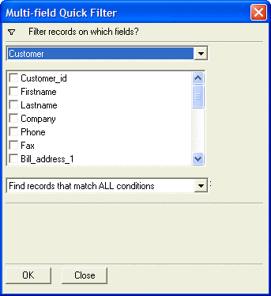
Select the following fields on which to filter records: Bill_city, and Bill_state_region. Alpha Five displays the field values of the selected record.
Select the following matching criteria "Find records that match ANY condition" in the drop-down list box.
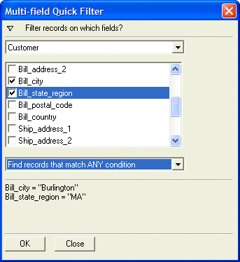
Click OK.
Alpha Five filters records according to the criteria you specify.
When you are done viewing the records, click
to view all the records.
In the next section, you learn to create queries that you can save, edit, and reuse.
Alpha Five gives you several ways to create query expressions for ordering and filtering records. The Query by Form Helper and the <span class=Screen>Query Genie</span> provide selection dialogs with which you can build query expressions. Advanced users can define queries by entering filter and order expressions directly in the Expression Builder.
<span class=Screen>Query by Form</span> lets you specify search and sort criteria in the same form that you use for viewing and entering data. Alpha Five determines which records appear and their order, and generates a query list based on your criteria.
You can use Query by Form with default and custom forms. In the next procedure, you use the AlphaSports Customer Information form to select customers from "Cambridge, MA" and "Boston, MA", and order them by last name.
To use Query by Form :
Double-click the Customer Information form in the AlphaSports Control Panel, found on the Forms tab. The Customer Information form appears.
Click the Query by Form button on the toolbar, or select Query > Query by Form. A blank Customer Information form, the Query by Form (QBF) Helper, and the Query by Form toolbar appear.
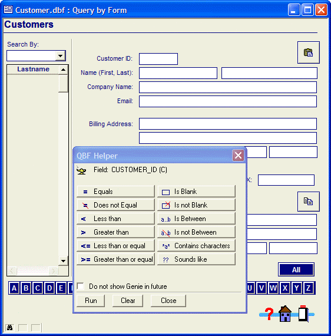
In the blank form, enter "Cambridge" in the City field, and "MA" in the State field.
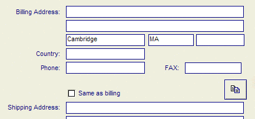
Click the Next Page button on the query toolbar. A new, blank Customer Information form appears.
Enter "Boston" in the City field and "MA" in the State field.
To specify order criteria, select Query > Order Criteria. Buttons appear next to each field on the form.
Click the button next to the Lastname field. The number one and an upward arrow appear.
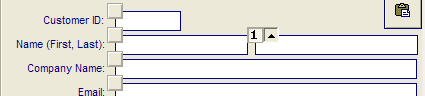
This indicates that the Lastname field is the primary field on which to sort the records, and they will be sorted in ascending order.
Click the
 Save Query button on the toolbar.
Save Query button on the toolbar.Enter the name "QueryQBF" in the Save Query As dialog box, and click OK.
Click Run Query! or press F9. The Query by Form status shows the records selected by the query. Picture
{kind=link}
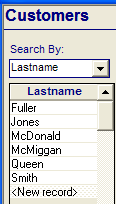
Use the PageDown and PageUp keys to view the records, or press F8, to view them in a browse.
When you are done viewing the records, click
to view all the records.
Using the Order Criteria View
Using Query by Form, you can select up to five fields for record ordering. You specify the record ordering criteria in Order Criteria view, where number boxes appear next to the Form fields.
To specify order criteria:
With the Customer Information form open, click the Query by Form button on the toolbar.
Click the Order Criteria
 button, on the Query
by Form toolbar.
button, on the Query
by Form toolbar.
To select additional fields, click on subsequent order number boxes for other fields, to assign the numbers 2, 3, 4, and 5, indicating the hierarchy for ordering records. The arrows next to the numbers specify ascending (up arrow) or descending (down arrow) order.
Click the Clear Criteria button at any time to reset ordering.
Using the Query by Form Helper
Query by Form has a special syntax and using
the QBF Helper helps you learn it. The QBF Helper is a modeless dialog box that you use to
create query expressions. You can use the QBF Helper
on any of the form fields. Use the  Genie
button on the Query by Form toolbar to toggle
its appearance on and off.
Genie
button on the Query by Form toolbar to toggle
its appearance on and off.
To use the QBF Helper :
In the Customer Information form, click in the State field, and click the Is Between button in the QBF Helper. The QBF Helper lets you define up to five selection criteria.
Enter "CA" as the starting value and "MA" as the ending value, and click OK. Alpha Five fills in the State field with "CA..MA".
Click the Run button on the QBF Helper and view the results.
Use the QBF Helper to find records with State values that contain characters "A" and "M". Alpha Five fills in the State field with "*a*, *m*".
Try using the QBF Helper to find a city that sounds like "New".
Using Inclusive and Exclusive Queries
To search for records that match your search criteria, click the  Include Records button on the Query by Form toolbar. When run, the query returns
only records that contain the search criteria.
Include Records button on the Query by Form toolbar. When run, the query returns
only records that contain the search criteria.
To search for records that do not match your search criteria, click
the  Exclude Records button
on the toolbar. When run, the query returns only records that do not contain
the search criteria.
Exclude Records button
on the toolbar. When run, the query returns only records that do not contain
the search criteria.
Saving Queries
To save a query, define your search criteria, and click the  Save button on the Query
by Form toolbar. Alpha Five prompts you to name the query, and
saves it. Saved queries appear on the Operations
tab in the Control Panel.
Save button on the Query
by Form toolbar. Alpha Five prompts you to name the query, and
saves it. Saved queries appear on the Operations
tab in the Control Panel.
To open a previously saved query, click the  Open
button on the toolbar. Alpha Five prompts you for the location of the
query, and opens it.
Open
button on the toolbar. Alpha Five prompts you for the location of the
query, and opens it.
Updating Query Lists
After you run Query by Form, the query list you generate remains active until you specify otherwise. It is important to remember that a query list is static, and becomes out of date when you add and change records.
When a query list becomes out of date, you can do the following:
Refresh the current query by pressing F5, or by selecting Form> Refresh Display or Browse > Refresh Display.
Display all records in the default order, by selecting Query > Show All.
Generate a new query list by running another query.
The <span class=Screen>Query Genie</span> is another, easy-to-use method for creating queries. You can use the Query Genie to create one-time searches or run saved searches. In addition, the Query Genie lets you perform additive queries. For example, if you run a query and are viewing the returned records, and you decide to run another query using the Query Genie. A pop-up menu appears allowing you to specify whether Alpha Five searches in all available records, or just within the current selection of records.
You access the Query Genie from a form or
browse, by selecting Query > Query Genie,
or by clicking the  Query Genie
button on the toolbar.
Query Genie
button on the toolbar.
To create a query using the Query Genie :
Open the Customer table Default Browse.
Click
 on the toolbar. The Query Genie
appears.
on the toolbar. The Query Genie
appears.Select the "Bill_city" field, the condition "is equal to", and click
 to display the upper right pop-up list box. The Value
dialog box appears.
to display the upper right pop-up list box. The Value
dialog box appears.Select the Select an existing value from the field option, and click the pop-up list box. The list box displays the Bill_city field values.
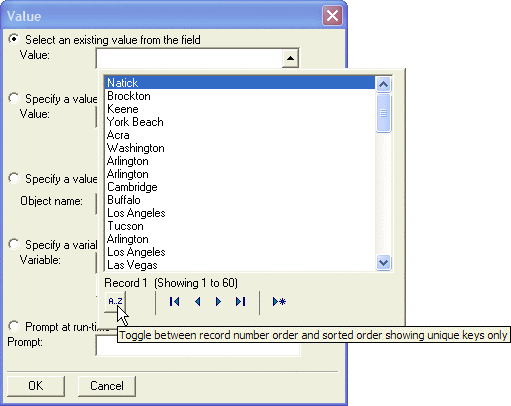
Click the
sort button, to see the fields listed in ascending
alphabetical order.Select "Boston" and click OK.
In the pop-up box below Boston, select "Cambridge" and click OK.
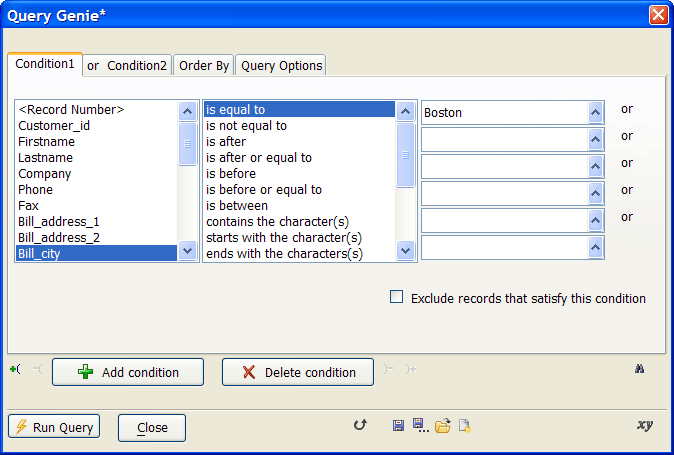
Display the Order By tab, and select "Sort By Lastname".
Click the Show Expression button
 . The Filter/Order
Expressions window appears.
. The Filter/Order
Expressions window appears.
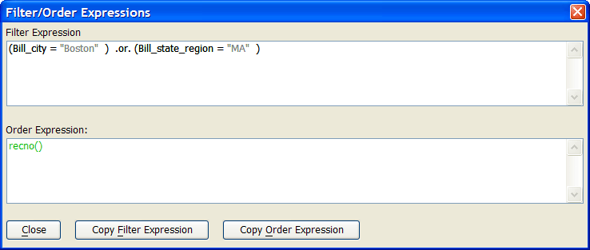
You see the filter and order expressions you created in the Query Genie.
Click Close.
Click the Switch from Genie Mode to Expression Mode button
 . A message
appears warning you that once you convert your filter to an expression,
you can no longer edit it using the Genie.
. A message
appears warning you that once you convert your filter to an expression,
you can no longer edit it using the Genie.Click OK. The Filter/Order Expressions window appears displaying the filter and order expressions. Advanced users can use the <span class=Screen>Expression Builder</span> to construct additional filter and order expressions.
Click Run Query > Search All Records.
Click to save the query as "QueryQG" and click OK.
Click the Rollup Window button
 to reduce the Genie window, and move
it out of the way. The record list appears with customers from Boston
and Cambridge, listed in ascending alphabetical order, by last name.
to reduce the Genie window, and move
it out of the way. The record list appears with customers from Boston
and Cambridge, listed in ascending alphabetical order, by last name.
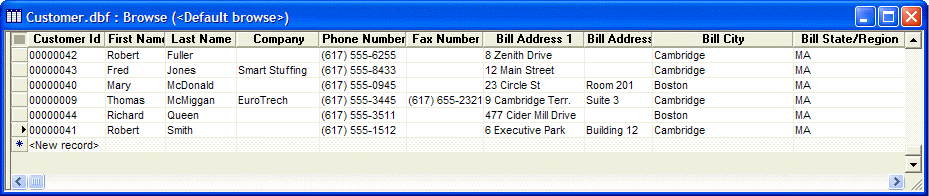
Click
Show All to display all the records.
Running a Saved Query
In the next procedure, you run a saved query and compare record lists.
To run a saved query:
Click the Expand Query Genie button, and click the
 Load
a Saved Query button at the bottom of the Genie
window. The Saved Queries dialog box appears.
Load
a Saved Query button at the bottom of the Genie
window. The Saved Queries dialog box appears.You select the saved query that you created using Query By Form. Select "QueryQBF" and click OK. Alpha Five displays the filter and order expressions.
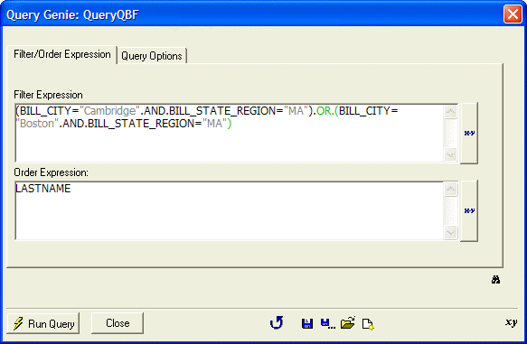
When you load a query created using Query By Form, Alpha Five displays the query in Expression Mode. When you load a query created using the Query Genie, Alpha Five displays the query in Genie Mode.
Click Run Query. Alpha Five returns the same record list of customers from Boston and Cambridge, listed in ascending alphabetical order, by last name.
If you are an advanced user, you might prefer to create expressions for querying records, by typing them directly in the <span class=Screen>Query by Expression</span> dialog box. To use Query by Expression :
Click the Query by Expression button on the toolbar. The Query by Expression dialog box appears.
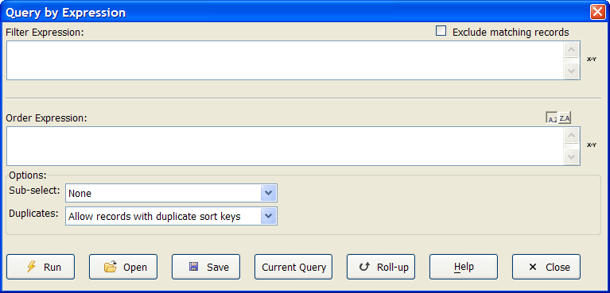
The following table describes the dialog box options.
|
Option |
Description |
|
Filter ex |
Determines the records to display. Enter an expression,
or click |
|
Order ex |
Determines the order in which to display the filtered
records. Enter an expression, or click |
|
Sub-select |
Select an option to display a portion of the filtered records. |
|
Duplicates |
Select whether to allow or disallow records with duplicate sort keys. |
Enter (or build) the following filter expression in the Expression Builder : Bill_city = "Boston" .OR. Bill_city = "Cambridge".
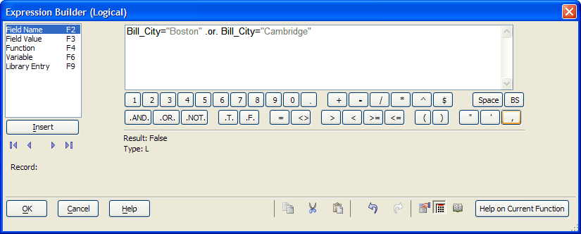
Click OK.
In the Order Expression enter Lastname.
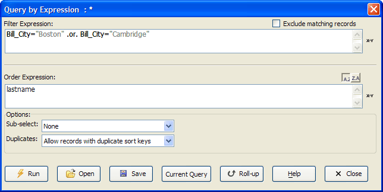
Click Run.
The same record list appears, with customers from Boston and Cambridge, listed in ascending alphabetical order by last name.
Click Current Query. Alpha Fives saves the query as the current, active query.
You can use the Current Query button to see the current filter and order expression. If you close and re-open a browse or form, the record list is controlled by the current query. Alpha Five displays the last used query list or index, if you have not set the form or browse filter or order properties. When a form or browse is in Design Mode, you can access the Properties window by pressing F12.
The  Show All Records button
turns off the current query and shows all the records in the table, if
the form or browse filter or order properties were not set in the Properties window.
Show All Records button
turns off the current query and shows all the records in the table, if
the form or browse filter or order properties were not set in the Properties window.
In this lesson, you learned about finding, selecting, and ordering records. You learned how to change the record display order for use when viewing records.
You used quick sorting and filtering techniques, as well as techniques using multiple sorting and filtering options. You learned that finding records sequentially versus finding records using an indexed list, results in substantial performance differences, particularly when you have a large number of records in a table.
You learned about query lists and indexes. You learned how to create and save queries, using Query by Form, Query by Expression, and by using the Query Genie. You saw that all queries have underlying filter and order expressions, whether you create them using Genie Mode or Expression Mode.
You learned that when you run a query, Alpha Five selects an existing index (if an index definition matches the query definition) or builds a new query list. You also learned that you must update query lists when you add or change records, whereas, Alpha Five updates your indexes, whenever you change or add a record.
What's Next?
See Creating a Database to learn how to create a new database, and specify the fields that define your database.